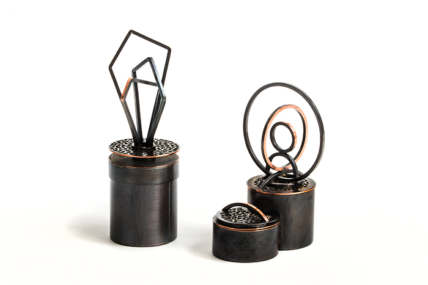

Shared Practice
Carrie Haase / Jesus Torres-Medina
Lounge Gallery, March 1-31, 2026
Opening reception: Thursday, March 5, 2026
Shared Practice brings together two metal artists whose work emerges from a common foundation of traditional metalsmithing, yet moves in distinct directions. Through jewelry, vessels, and constructed objects, the exhibition highlights how shared processes and material knowledge can lead to varied forms, scales, and intentions. The work reflects an ongoing dialogue between teaching, making, and individual voice.